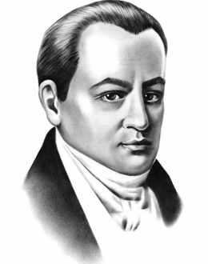

Головна сторінка
Біографія
Оцінка творчості
Цікавинки
БІОГРАФІЯ

Народився в Полтаві, тоді Полтавський полк Війська Запорозького, Гетьманщина, в сім'ї канцеляриста — шляхтича гербу Огоньчик.
Після навчання в Полтавській духовній семінарії (1789–1793), працював канцеляристом, у 1793–1796 роках — домашнім учителем у сільських поміщицьких родинах.
У 1796–1808 роках перебував на військовій службі в Сіверському карабінерському полку. У 1806–1807 роках Котляревський у військовому званні штабс-капітана брав участь у російсько-турецькій війні 1806—1812 років, був учасником облоги Ізмаїлу. Нагороджений орденом Святої Анни 3-го ступеня за дипломатичні заслуги зі схиляння до нейтралітету буджаків та хоробру кур'єрську діяльність на передовій під час штурму цієї фортеці. У 1808 році вийшов у відставку.
У 1806—1807 Котляревський в ранзі штабс-капітана брав участь у російсько-турецькій війні, був учасником облоги Ізмаїлу.
У 1808 вийшов у відставку з орденом святої Анни.
З 1810 працював наглядачем «Дому для виховання дітей бідних дворян».
У 1812 під час походу Наполеона I Бонапарта на Росію Котляревський сформував у містечку Горошині на Полтавщині 5-ий український козачий полк, за що отримав чин майора.
У 1819—1821 — директор Полтавського вільного театру. Для поповнення репертуару театру написав дві п’єси – «Наталка Полтавка» (1819), «Москаль-чарівник»; продовжує роботу над «Енеїдою».
У 1818 разом з В.Лукашевичем, В.Тарновським та ін. входив до складу полтавської масонської ложі «Любов до істини».
З 1821 року член Вільного товариства любителів російської словесності. Підтримував зв’язки з декабристами.
У 1827—1835 — попечитель «богоугодних» закладів.
У 1835 р. через хворобу Котляревський залишає службу і йде у відставку. Перед смертю він відпустив на волю дві сім’ї своїх кріпаків і роздав родичам та знайомим усе своє майно.
Помер 10 листопада 1838р. і похований у Полтаві.